50 Consejos Humanitarianos sobre Manejo de Información
Consejos para organizar y gestionar datos en una respuesta humanitariania
Creado por Simon Johnson / @simon_b_johnson
Haga clic a la derecha con su teclado o desliza a la derecha para navegar
Haga clic hacia abajo para saltar a una section
Esta guía pretende ser una lectura rápida para cualquier persona que tiene que o va a trabajar en el manejo de información en un contexto humanitario.
Esperamos que muchos de los consejos sean obvios, pero aun así abordan los errores repetidos que se encuentran en este sector.
Una oficina temporal después del Tifón Haiyan
Datos bien administrados y precisos son la clave para tomar decisiones informadas en el sector humanitario. El manejo de información puede ayudar a aclarar ambientes extraños o cambiantes, aportando contexto a los encargados. Bien administradas corrientes de información pueden ayudar organizaciones a ser más receptivas y eficientes, contribuyendo a una mayor eficacia.
Los consejos aquí dados no deben ser considerados como reglas fijas, más bien como guía aproximada. El contexto en que se usen puede requerir diferentes enfoques.
Cada página proveerá un consejo y una breve descripción. Si desea obtener más información sobre un consejo en particular, entonces haga clic hacia abajo con su teclado o deslice hacia abajo. Aquí podrá también encontrar enlaces a recursos de lectura y aprendizaje más extenso.
Texto aqui indicará cuando puede oprimir hacia abajo
Quando desliza hacia abajo, estas páginas contendrán información y materiales adicionales sobre el consejo.
Los básicos
4> Utilice una hoja de cáculo para datos numéricos
Ha habido muchos ejemplos en respuestas humanitarias anteriories donde datos numéricos han sido acumulados en un documento de texto cuando una hoja de cálculo hubiera sido más adecuada.
Esto significa que agregación sencilla, operaciones y análisis no se pueden hacer antes de primero importar datos en una hoja de cálculo. Tablas de palabras además pueden tener un formato que no se copia bien a las hojas de cálculo, significando trabajo extra antes de que se puedan usar para análisis.
Haga clic hacia abajo para ver más
Microsoft Excel es más comúnmente utilizado, pero hay alternativas gratuitas con un poco menos de funcionalidad.
Google Spreadsheets: Webpage
Open Office: Webpage
Unase con la comunidad de Gerentes de Información trabajando en la zona.
En la mayoría de los casos en que se está llevando a cabo el trabajo humanitario está, habrá otras organizaciones trabajando en proyectos parecidos. Asistiendo a reuniones locales y uniendose a los grupos pertinentes de Skype, puede hacer contacto con otros gerentes de información. Al compartir conocimiento y colaborar para resolver problemas, se puede completar trabajo de forma rápida y eficiente.
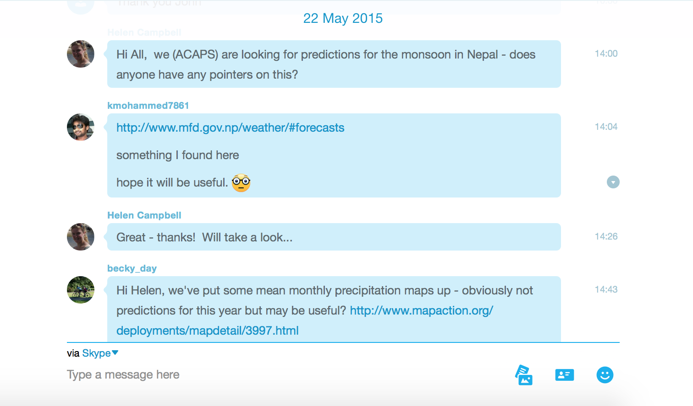Guarde frecuentemente
Esta lección se aprende rápidamente a través de la experiencia práctica. Los ordenadores pueden ser caprichosos y viendo su equipamiento colgarse y perder una hora de trabajo destruye el espíritu. Ahorrese la angustia y guarde frecuentemente!
Guarde versiones múltiples
Es posible arrepentirse de un gran cambio realizado durante la semana pasada. Lo mejor que puede hacer es guardar varias versiones a medida que avance para que pueda volver fácilmente a estados anteriores de su trabajo.
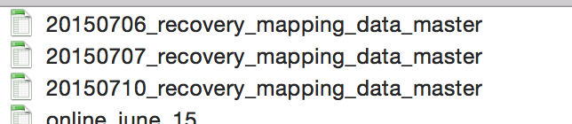Utilice nombres sensibles para los archivos
Existen muchos atributos que se pueden incluir en el nombre de un archivo. Lo más importante es de asegurarse que sea comprensible para sí mismo, y también para otros posibles usuarios --sin haber el contexto completo.
Algunos componentes sugeridos:
- Fecha - AAAAMMDD
- Descripción
- Sus iniciales
- Número de la versión li>
Haga un back up de sus datos
Aunque usted guarde los datos, a veces se pueden perder. Esto pudiera ser debido a un virus, un error del disco duro o del usuario, o decenas de otras razones
Con el predominio de los servicios de nube para guardar archivos, es posible guardar trabajo de modo gratuito.
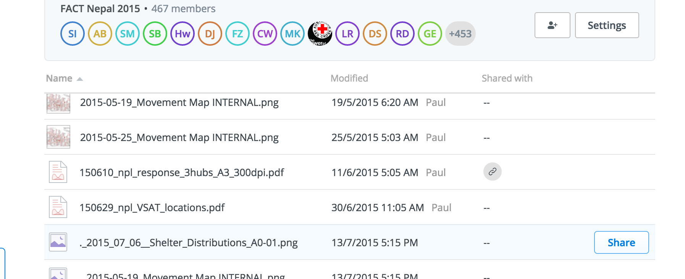Dropbox fue utilizado por la IFRC en la respuesta al terremoto en Nepal del 2015
Haga clic hacia abajo para ver más
Recolección
Compruebe si datos ya exisenten
Vale la pena contactar a la comunidad de manejo de la información y el gobierno en la zona para comprobar que la información no haya sido juntada por alguien más. No hay necesidad de duplicar el trabajo que ya se ha hecho.
Sepa cómo sus datos contestarán a sus preguntas
Ha habido muchas evaluaciones llevadas a cabo donde la mayor parte de los datos jamáas fueron utilizados. Al decidir cómo utilizará sus datos antes de empezar, puede reducir preguntas redundantes y asegurar que se hagan las preguntas adecuadas.
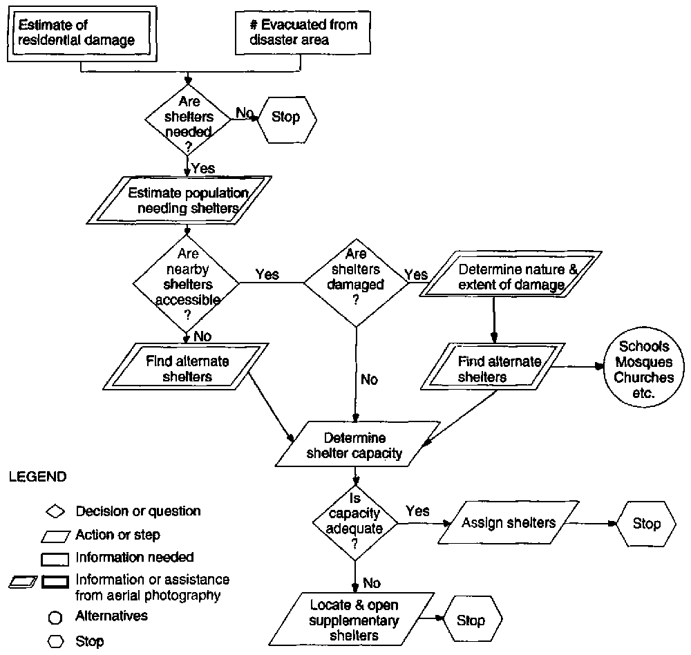Diseñe su formulario de datos antes de recopilarlos
Diseñando el formulario de datos antes de recopilarlos puede dar más dirección al diseño de sondeos y a la recopiliació de datos de múltiples personas. Por ejemplo, si usted quiere saber el daño en cada zona, en lugar de proponer una pregunta abierta a cada persona, proveyendo un formulario asegura que los datos se recojan de forma consistente.
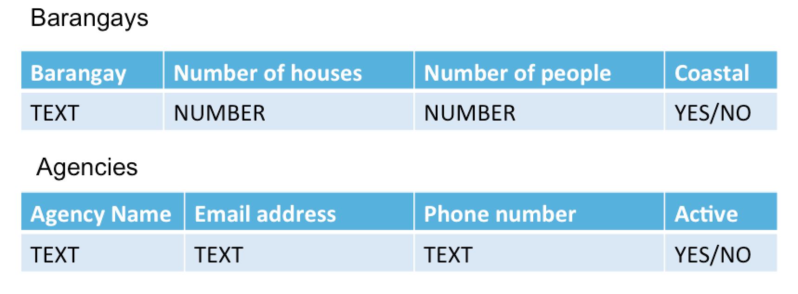Utilice la captura de datos móviles
En vez de hacer encuestas de recogida de datos en papel se puede realizar usando dispositivos móviles como teléfonos y tabletas. Esto permite la validación de datos en la entrada asegurar los datos recogidos es consistente en la naturaleza
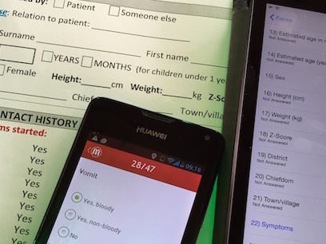P
Presione hacia abajo para obtener másHay una serie de herramientas por ahí que puede ayudar con la recolección de datos móviles, algunos son gratuitos y otros son pagados.
- A la libertad de utilizar la aplicación de recogida de datos móviles
MagPi - Una aplicación de la recolección de datos móvil comercial
Nomenclatura coherente de las variables
Si usted es llevar a cabo más de una serie de estudios de asegurarse de que los nombres de las variables utilizadas en los datos son consistentes con los estudios anteriores. De lo contrario, puede ser muy difícil para la person que está analizando de los datos para que coincida con rapidez las preguntas juntos.
Utilice unas revisiónes de datos secundarios
Los datos que desee ya puede existir no sólo en una sola fuente limpia. Considere si es posible extraer estos datos juntos a través de la revisión y cotejo de otras fuentes de datos.
Un ejemplo de esto es la Cruz Roja está creando una conjunto de datos de los centros de tratamiento de ébola de diferentes artículos de noticias que los mencionados para crear un único conjunto de datos consolidada que no existe ya.
Compruebe los metadatos de los datos
Si está utilizando o se refieran a otros datos, asegúrese de comprobar los metadatos sobre cómo, cuándo, dónde y por quién se recogieron los datos. Esto le dará una indicación de cómo fiable los datos son y de qué manera los datos pueden ser utilizados.
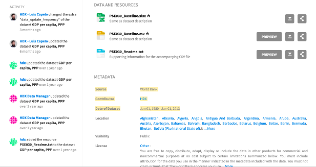Entender la diferencia entre los datos cuantitativos y datos cualitativos.
Los datos cualitativos se refiere a las historias que se reunieron intencional y sistemáticamente muestreados, compartieron, interrogado, y analizadas. Se le ayudará a entender el contexto, producir ideas y pensar en el que las decisiones tienen que ser hechas.
Los datos cuantitativos se refiere a la información que puede ser medida y anotada con números, estandarizar y normalizar. Se le permitirá utilizar las métricas para tomar decisiones acertadas.
Hojas de cálculo
Sólo una pieza de información por celda
Tener más de una pieza de datos en una sola celda de hoja de cálculo impide filtrar, suma o procesar una componente de la lista de ninguna manera. Una forma de resolver esto es para duplicar la línea para cada componente de la lista.
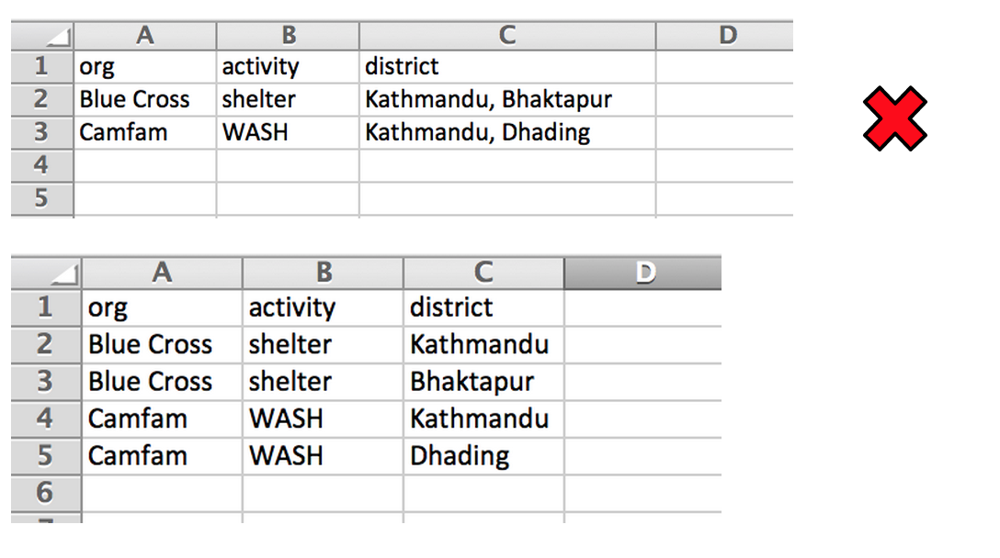Aprender VLookups
A menudo tendrá que buscar otros datos basados en un valor en el conjunto de datos. Un ejemplo es que podría tener los nombres de los distritos en los que está trabajando, pero también quieren los códigos oficiales para éstos. Un VLookup puede tirar a través de estos códigos oficiales de forma automática.
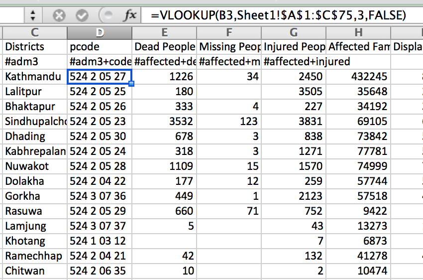Presione hacia abajo para obtener más
Material de aprendizaje libre para VLookups de aprendizaje
O aprender index(match())
Usando una combinación de función de Index y la función de Match crear una versión más potente de búsqueda.
Presione hacia abajo para obtener más
Material de aprendizaje gratuito para el Index de aprendizaje (Match)
Aprender las Pivot tablas
Las Pivot tablas son una herramienta muy poderosa en hojas de cálculo. Se utilizan para resumir, analizar y manipular r á pidamente los conjuntos de datos. 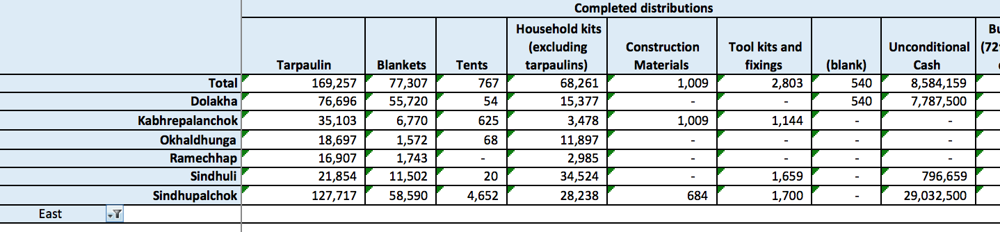
Presione hacia abajo para obtener más
Material de aprendizaje libre para Pivot tablas
Registrar datos a un nivel granular y usar Pivot tablas se agreguen y crear informes
Muchas veces las personas organizan sus datos en la forma que se informará en. Sin embargo mediante la agregación hasta que restringe las posibles formas los datos se pueden asociar en el futuro si aparece una nueva necesidad. Es siempre mejor para registrar los datos en el formato más básico posible.
No combinar celdas en una hoja de cálculo
Esto puede romper algunas funciones en hojas de cálculo, tales como Pivot tablas y filtros. Un método alternativo es repetir el valor de la celda o el uso de color para indicar la gama.
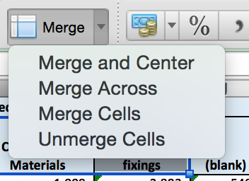Mantener los tipos de datos consistentes en columnas
Al asegurarse de que todos los tipos de datos son los mismos que significa que las operaciones de datos (por ejemplo, SUM) pueden llevarse a cabo sobre las columnas.
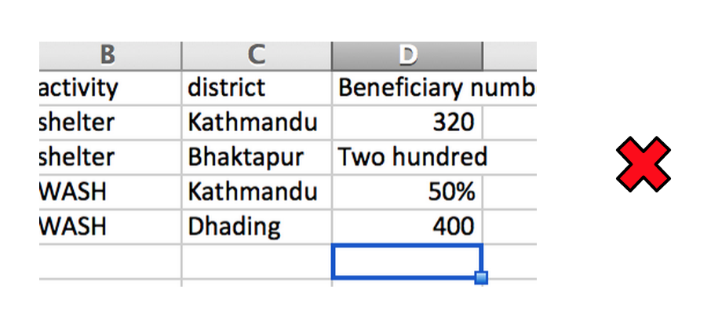Mantener los nombres de datos consistentes
Consistente de nomenclatura de datos significa que cuando una hoja de cálculo se visualiza o resumir que todas las instancias correctas de los datos son recogidos. A continuación tenemos la misma organización deletreado diferentes maneras y un filtro sencillo no puede recogerlas todas.
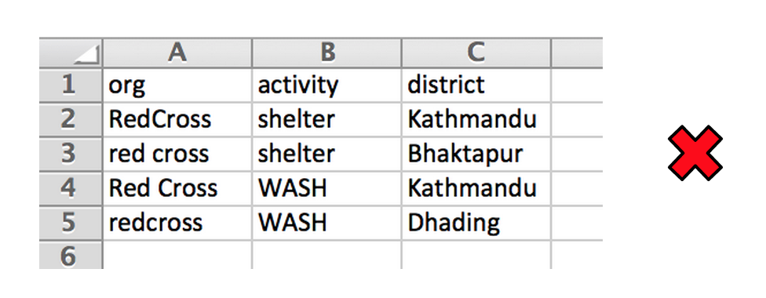Mantener todos los datos similares en un conjunto de planos o datos
Al colocar los datos en hojas separadas que dificulta el proceso de agregación. A continuación se muestra una hoja de cálculo con una pestaña para cada distrito. Podría haber sido puesto en una tabla con una columna para el distrito como en la columna A en la segunda imagen. Si se necesita un informe para un distrito una Pivot tabla se puede utilizar para generar este.
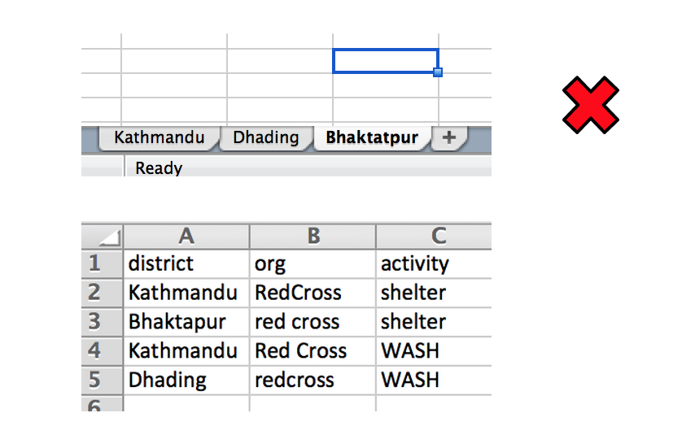No utilizar el color para representar los datos
Cuando una máquina lee los datos o se copia a otra hoja hay una posibilidad de que el formateo se pierde junto con los datos que representa. Crear una columna adicional para el atributo de datos. Color todavía podría ser utilizado para poner de relieve de los datos.
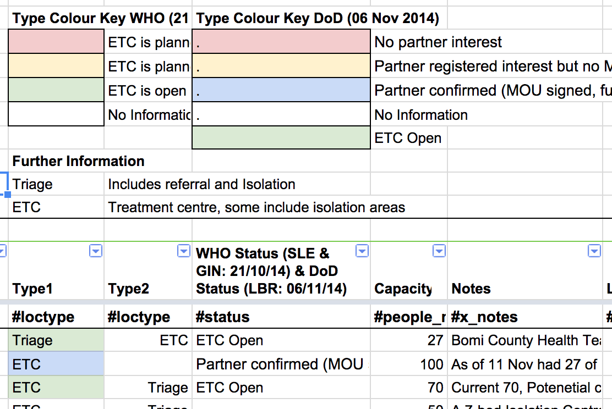Gestión de datos
Revisar en el acto sus datos
Una inspección al azar es un proceso rápido en el que elegir 5 a 10 líneas al azar de los datos y comprobar a fondo. Es especialmente importante hacerlo con los datos derivados.
Ayuda a comprobar que su proceso está funcionando constantemente a través de todo el conjunto de datos.
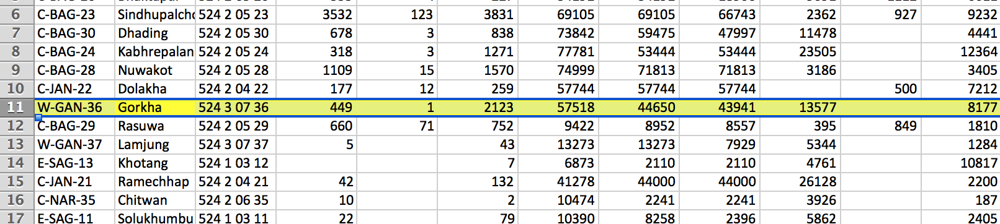Compruebe máximos, mínimos y sumas
Al revisar sus datos siempre realizar los controles sobre el extremo. Si tienes a alguien más de 200 años de edad en sus datos es probable que pueda asumir con seguridad que algo hay que corregir en el proceso.
Comprobar el sentido
¿Los datos tienen sentido? Si usted tiene más personas afectadas que la población de la zona, probablemente algo ha ido mal en el proceso.
Comprobar si hay duplicados
Para encontrar rápidamente y eliminar duplicados de sus datos hacen uso de la función de clasificación en varias columnas. Este ordenará filas duplicadas lado de la otra.
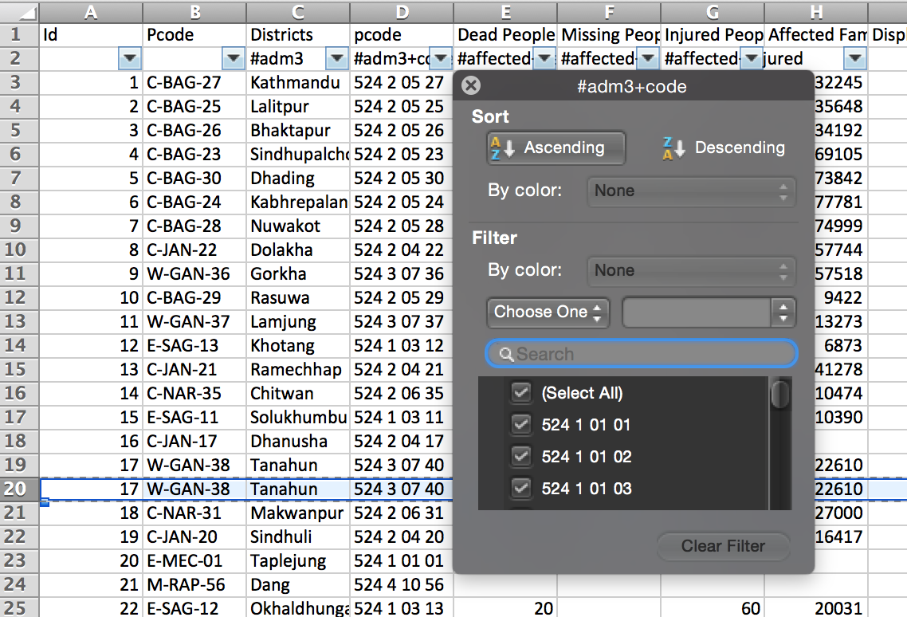Utilizar códigos oficiales para representar las regiones y los distritos en los que sea posible
En muchos países en los que las operaciones de trabajadores humanitarios se están llevando a cabo habrá códigos oficiales de las áreas de administración. Como los nombres de lugares pueden describirse, en muchos aspectos especialmente cuando se utilizan caracteres extranjeros puede ser difícil de comparar y unirse a los conjuntos de datos sin estos códigos. Muchas horas de tiempo se pueden guardar mediante el uso de ellos.
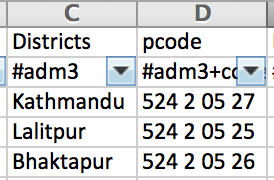Comprobar las relaciones
Si espera que ciertas relaciones entre los datos, tal como un código de administración única pertenece a un solo lugar esto también se puede comprobar con las Pivot tablas. Dejando caer ambos campos en las columnas de la fila que muestra todos los partidos entre las dos columnas de datos. Aquí podemos ver 2 524 05 25 se ha utilizado dos veces por accidente.
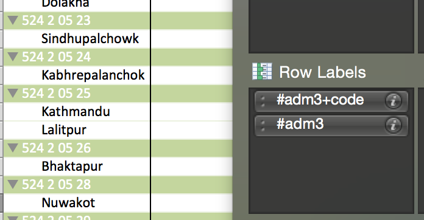Obtener coordenadas de datos de punto
Si tiene datos que representan un punto, como un hospital o una casa en lugar de sólo nombrarlo o dar su dirección también podría recoger las coordenadas para ello. Hay muchas maneras posibles de hacer esto.
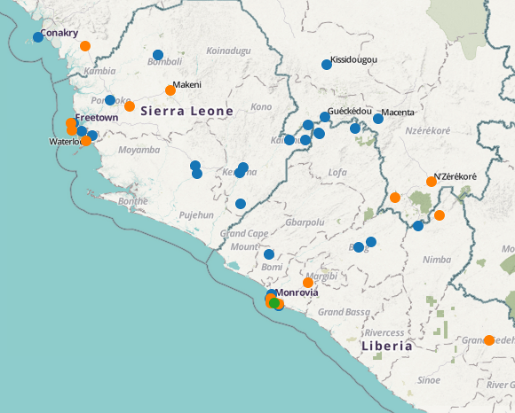Presione hacia abajo para obtener más
UnDispositivo GPS se puede utilizar para obtener puntos de coordenadas. La mayoría de los teléfonos inteligentes contienen ahora la tecnología para hacer esto. aplicaciones de recopilación de datos móviles también pueden ayudar con el proceso.

Las direcciones pueden ser geocodificada para obtener coordenadas. Sin embargo, en muchos países en desarrollo las direcciones no están bien documentados o son inexistentes. Es mejor para registrar los datos de las coordenadas al mismo tiempo que la recogida de datos
HXLate sus datos
HXL es un tipo diferente de datos estándar, diseñado para mejorar el intercambio de información durante una crisis humanitaria sin añadir carga de informes adicionales. Mediante la adición de HXL a sus datos que ayudan a hacer que los datos más comprensible y m á s fácil de procesar en el futuro
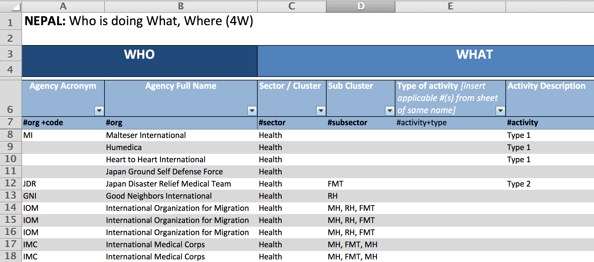3W datos con etiquetas HXL (en la fila 7) utilizadas en la respuesta al terremoto Nepal 2015
Presione hacia abajo para obtener más
Página web HXL - Vaya aquí para aprender cómo utilizar HXL: http://hxlstandard.org/
HXL postal
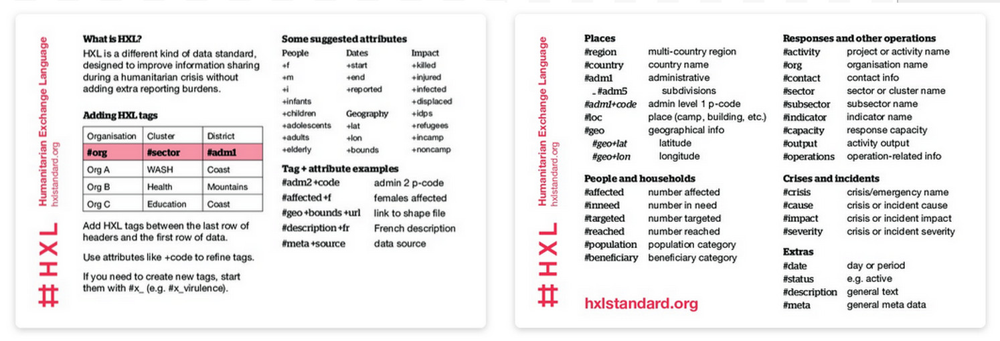Visualización
Quitar ruido visual
Mediante la eliminación de los elementos visuales innecesarios que permite una interpretación más fácil de los datos

Alineación
Elementos de desalineación puede hacer que un producto parezca molesto y difícil para el usuario siga. Mediante la alineación de los elementos de un sistema de red que hacen el producto más atractivo y más fácil de comprender.
Utilice iconografía estándar
Cuando la producción de informes, mapas o Dashboards utilizando la iconografía estándar pueden ayudar al espectador a interpretar rápidamente los temas y significados de fotos familiares
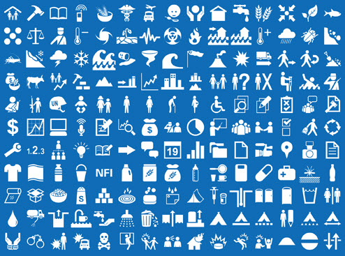Presione hacia abajo para obtener más
Sea consciente de las connotaciones de color
Los colores tienen un significado diferente unido a ellos. Si ustedes, las áreas de color rojo sobre un mapa, algunas personas asumen que esto puede indicar un área de peligro cuando esto puede no ser su intención. Vale la pena darse cuenta de que los diferentes colores pueden tener diferentes significados en diferentes culturas

Elige esquemas de color legibles
Tenga cuidado al elegir los colores, sobre todo en los mapas, para asegurarse de que todo el mundo puede leerlos. Su producto se puede imprimir en blanco y negro o leído por una persona con ceguera al color. La elección de una escala de colores sencillo con ligereza variable puede resolver este problema
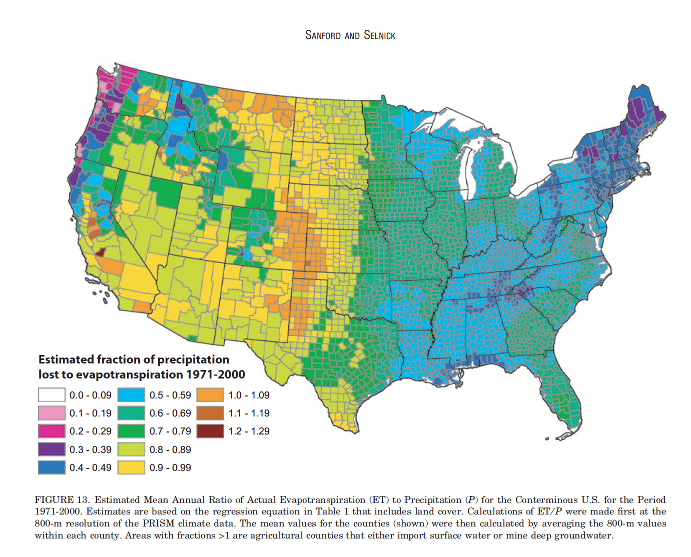Un ejemplo de un difícil leer esquema de color
Presione hacia abajo para obtener más
Hay buenas herramientas que hay para ayudar a escoger un buen esquema de color
Color Brewer es una buena herramienta en particular que tiene opciones para seleccionar esquemas que funcionan en las impresoras en blanco y negro y para las personas con daltonismo
Hacer Mapas
Si sus datos tienen un elemento geográfico que puede ser mejor para representarlo como un mapa en lugar de una tabla de datos. Hay algunos software y servicios gratuitos y de pago que puede hacer esto.
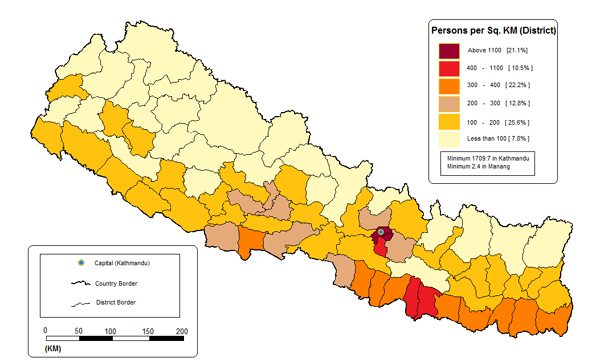Presione hacia abajo para obtener más
Hacer Mapas
QGIS es software de código abierto que se utiliza para la creación de mapas.
QGIS tutorials es un sitio web que contiene una gran cantidad de material de aprendizaje para hacer mapas con QGIS.
Hacer Infografía y Dashboards
Su informe de tabla dinámica puede decir todo lo que un gerente o el público tiene que saber, sin embargo, el compromiso de que será baja. Al hacer la infografía y Dashboard que le ayudará a obtener las figuras clave de lectura.
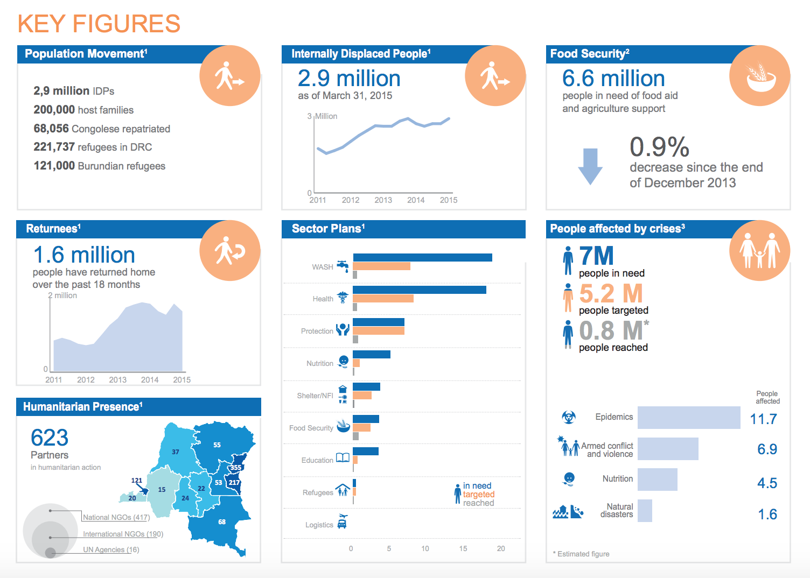Hacer Mapas Web
Mapas web pueden permitir al usuario interactuar con el mapa zoom, panorámica, hacer clic y girar capas de encendido y apagado. Este control adicional significa más datos se pueden dar al usuario y se pueden personalizar lo que están viendo para su propio análisis.
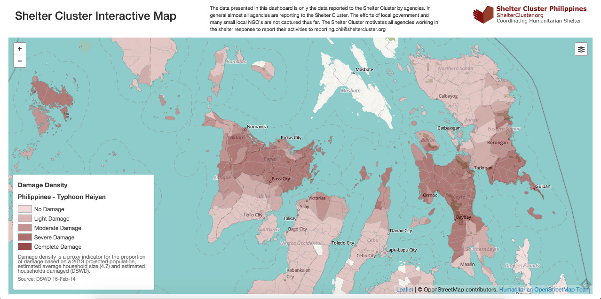Para aquellos que no saben cómo codificar hay servicios por ahí que proporcionan los mapas web. CartoDB es un servicio popular para obtener mapas web de sus datos en funcionamiento rápidamente.
Para los más aventureros es posible codificar sus propios mapas web con JavaScript. Leaflet es una buena biblioteca para empezar
Hacer Dashboards interactivos
Dashboards interactivos son más difíciles de hacer, pero puede permitir que un usuario pueda averiguar, cortar y realmente analizar un conjunto de datos
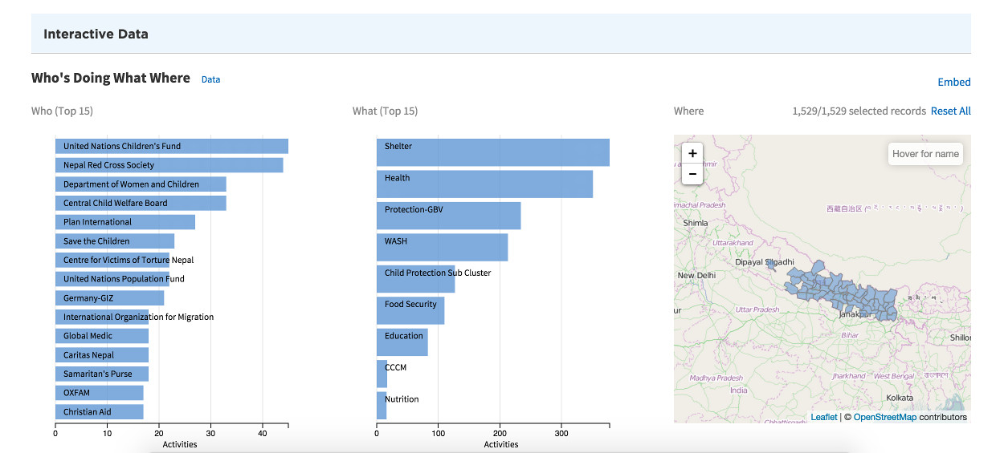Un software de pago popular para hacer esto es Tableau. También tienen una versión gratuita para uso personal para probar.
Si está familiarizado con la codificación hay algunas grandes bibliotecas JavaScript para realizar Dashhboards en línea con. Vale la pena tener una lectura en torno. d3.js, crossfilter.js y dc.js.
Habilidades informáticas
Comunicación verbal
Mientras que los productos de gestión de información se pueden comunicar los datos y un mensaje, un gestor de información se encuentran a menudo en reuniones y presentaciones. Para ser capaz de comunicarse verbalmente los datos y simplificar ideas complejas es una herramienta poderosa.
Escuchar
Escuchar y ser paciente mientras que la comprensión de las necesidades de los usuarios de sus IM productos. Descubre sus contraints y recursos. Resumir lo que usted piensa que quieren y se pongan de acuerdo. No se construye lo que usted piensa que necesitan, hacer lo que realmente necesitan. Siga los pasos en la rueda de escucha de abajo para ayudar.
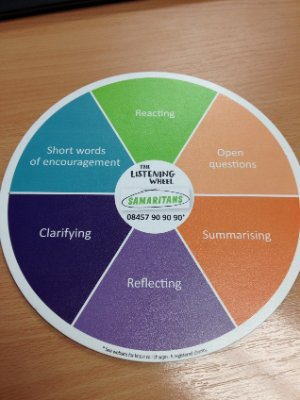Destilar las preguntas
La pregunta que el usuario puede plantear originalmente o producto que el usuario puede pedir que no siempre podría ser lo que realmente quieren. A veces las personas hacen su propia interpretación de resolver un problema. Al discutir el problema y las ideas con ellos mejores soluciones se pueden encontrar.
No hacer suposiciones sobre el usuario
Al hablar con los usuarios o produciendo de productos para el usuario hacer suposiciones acerca de lo que ya saben. Escuchar sus limitaciones y el conocimiento.
Tome descansos y obtener un buen sueño
Respuesta humanitaria puede ser un trabajo estresante y agotador. Dése descansos regulares y asegúrese de dormir lo suficiente!
Involucrarse
Involucrarse
Este es un proyecto de código abierto, así que cualquiera puede añadir consejos y recursos para que sea más amplia.
Contactar Simon Johnson para más detalles.
Este proyecto se encuentra alojado en Github.
Gracias a...
Andrew Braye
Heidi El Hosaini
Robert Banick
Jean M�ge
Jagoda Pietrzak
Shruti Grover